Screen Test
Scenario
You want to verify if your screen has a broken pixel.
The following procedures provide step-by-step instructions for creating a screen test page accessible from the main page of your Smoke Control system.
Create a screen test page.
- You are familiar with working with graphics. Refer to Graphics Editor.
- In System Browser, select Application View.
- In Applications > Logics, select Virtual Object.
- In the Object Configurator tab, create a New Virtual Integer and name it
VirtualObjectforScreenTest.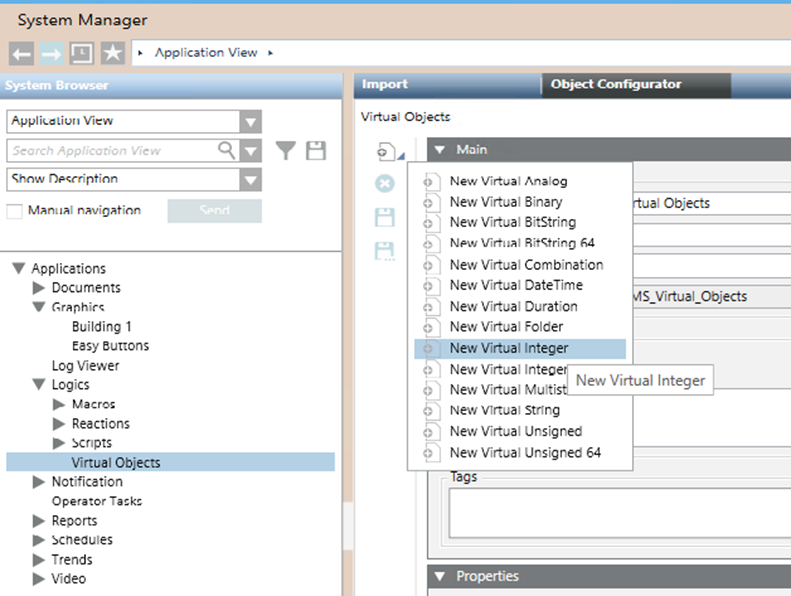
- Create a macro that writes the value
1to the VirtualObjectforScreenTest object. Name itScreen Test Trigger.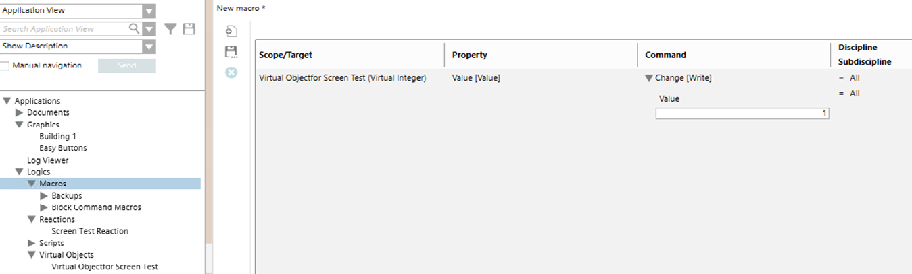
- Create another macro that will toggle the values of the VirtualObjectforScreenTest object. Set to
10seconds. If more time is needed to verify the pixels, increase the time. Name itScreenTestSequence.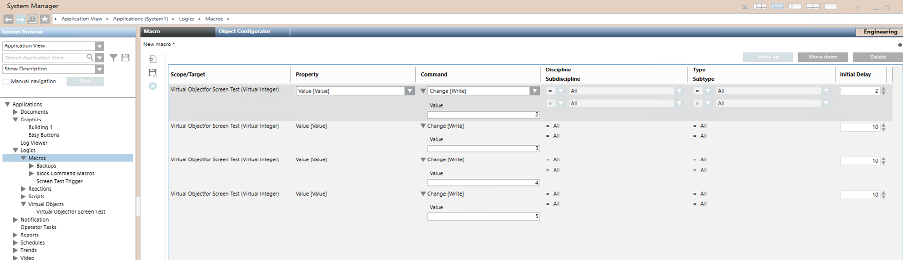
- Create a reaction that will trigger the macro sequence when the value of VirtualObjectforScreenTest is set to 1. Name it
ScreenTestReaction.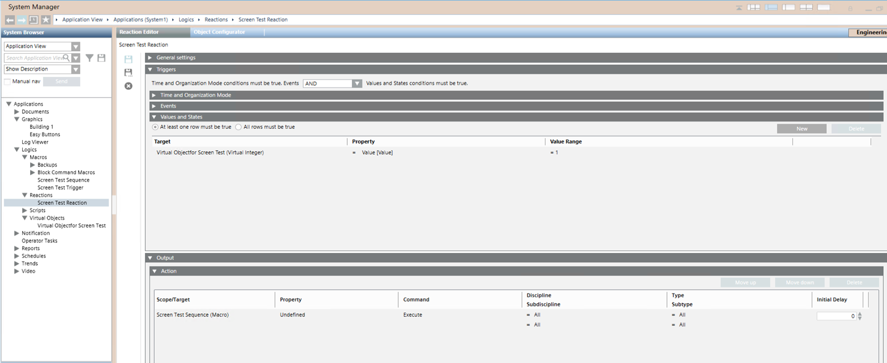
- In System Browser, select Management View.
- In Project > System Settings > Libraries > L1-Headquarter > Fire > SmokeControl, select Sample Graphics.
- In the Graphics tab, edit the Sample Graphic.
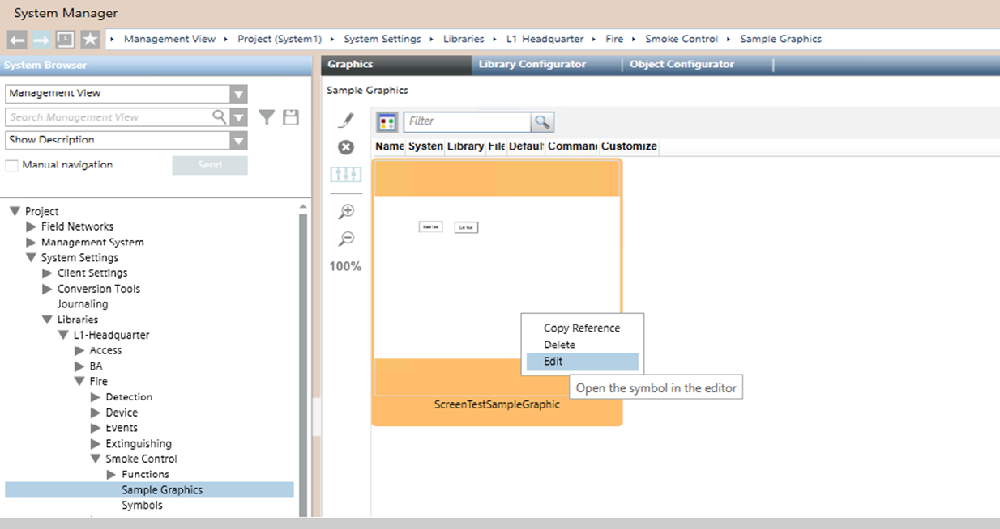
- In the Graphics tab view, select Element Tree and Properties for the Sample Graphic; Select the Start Test.
- The Layer1 expands with the path selected in Element Tree.
- Select the Start Test path and drag and drop the ScreenTestSequenceMacro into the target.
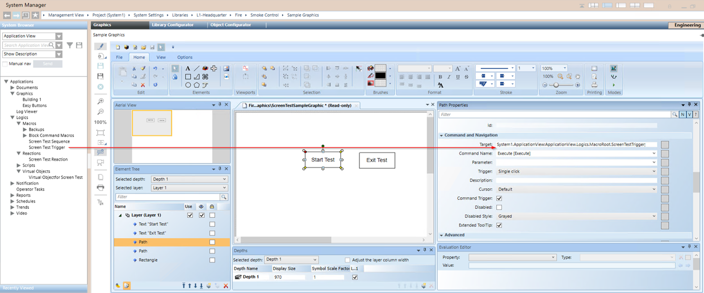
- Select the Exit Test path and drag and drop the main graphic page of your smoke control system into the selection reference.
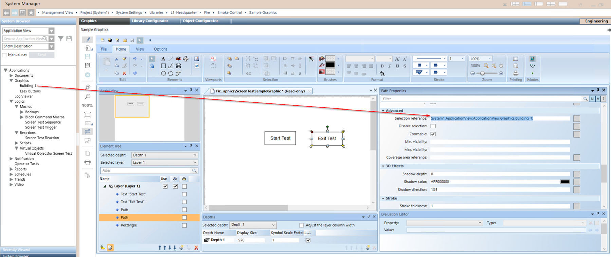
- Select the rectangle, then drag and drop the VirtualObjectforScreenTest into the Fill Expression.
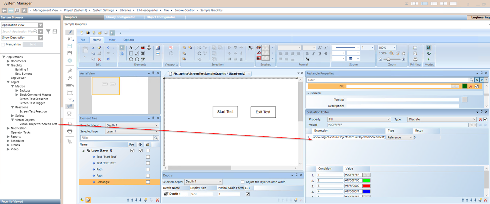
- Save the graphic.
- Create a button that will give access to the test page from the main graphic page of your smoke control system.
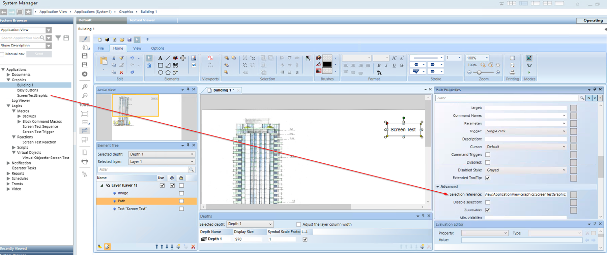
Create a screen test page for the second monitor that is dedicated to the floor view.
- You are familiar with working with graphics. Refer to Graphics Editor.
- You have already created the main monitor test page.
- Select the previously created graphic and save it with a descriptive name. For example,
ScreenTestGraphic2_Floors. - First, select the floor graphic. Then, select the Test Exit route and drag the main floor graphic into Advanced > Selection reference.
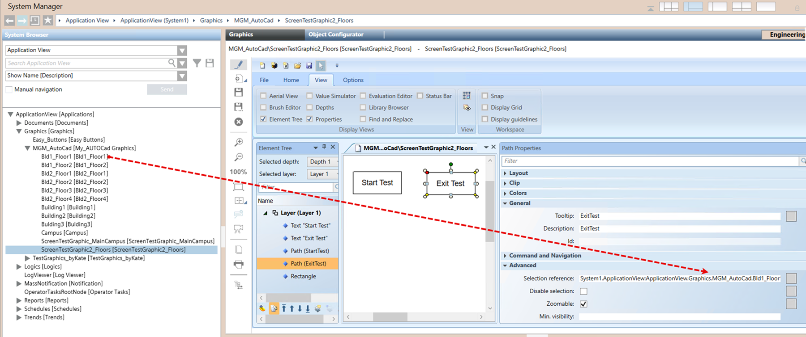
- In System Browser, select the ScreenTest Floors graphic, then select the Object Configurator tab. In the Function dropdown list, select FloorGraphic.
NOTE: The FloorGraphic function, configured in the Object Configurator, ensures that the ScreenTest_for Graphic2_Floors graphic is always displayed on the designated floors monitor rather than the building monitor according to the display rule defined in the Flex Client Multi Monitor System with Touchscreen Displays.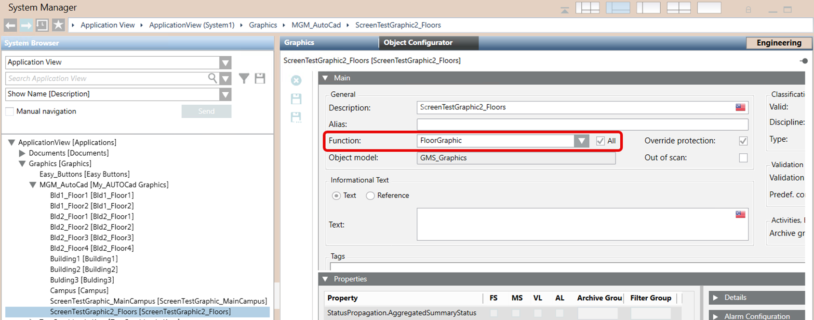
- Create a new button to access your newly created test page from the main graphic page of your smoke control system.
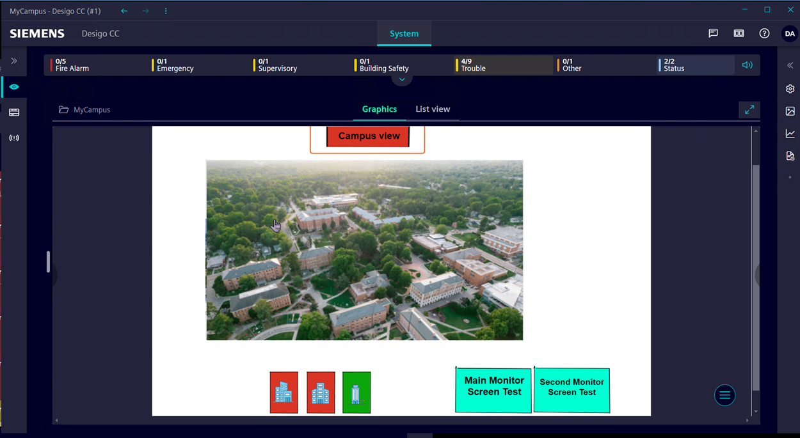